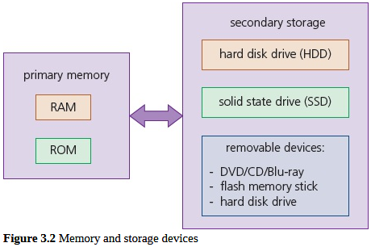

Types of Memory and Storage
Computers require some form of memory and storage.
Memory is usually reffered to as the internal devices which the computers can access directly.
This memory can be the user's workspace, temporary data or data that is key to running the computer.
Storage devices can also be removable to allow data, for example, to be transferred between computers.
Removable devices allow a user to store important data in a different building in case of data loss.
However, all of this has become a lot less important with the advent of technology such as ‘data drop’ (which uses Bluetooth) and cloud storage.
Internal memory includes components such as registers (which are part of the processor).
There is also memory cache (which is external to the processor); this is used to store data which the processor will probably need to use again.
Figure 3.2 (text in blue) summarises the types of memory and storage devices covered in this chapter
This website is an AS Level Computer Science project that covers [Chapter name] of the [syllabus code] syllabus.
Made by Alexandru and Axel